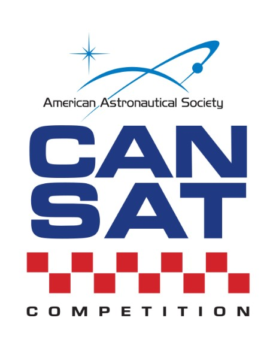
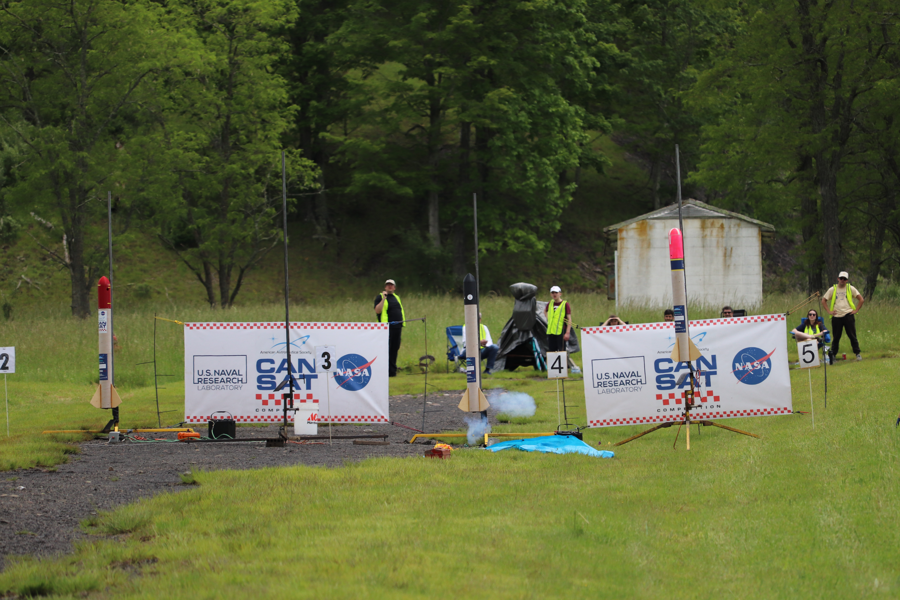
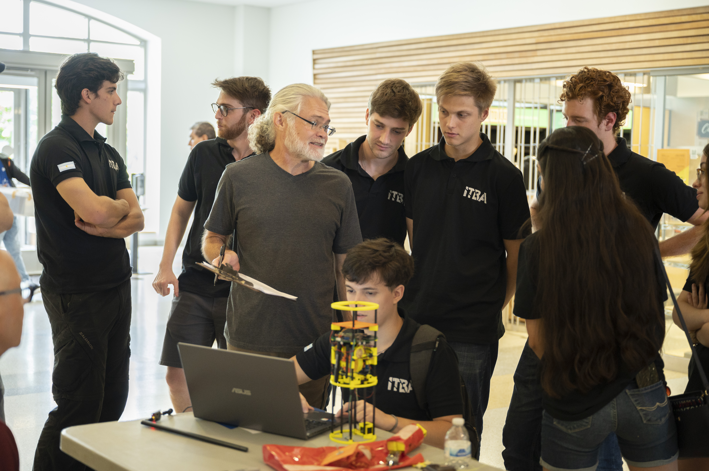

Student design-build-launch competition.

The American Astronautical Society (AAS) has organized an annual student design-build-launch competition for space-related topics. Although similar competitions exist for other fields of engineering (robots, radio-control airplanes, racing cars, etc.), most space-related competitions are paper design competitions. While these are worthwhile, they do not give students the satisfaction of being involved with the end-to-end life cycle of a complex engineering project, from conceptual design, through integration and test, actual operation of the system and concluding with a post-mission summary and debrief. This competition fulfills that need!
This annual competition is open to teams from universities and colleges. Teams must be able to design and build a space-type system, following the approved competition guide, and then compete against each at the end of two semesters to determine the winners. Rockets will be provided but teams are responsible for funding the construction of their CanSat and all travel/lodging expenses.
August 2026 - 2027 Competition Guide to be posted soon.
CanSat 2027 Dates: June 10 - 13, 2027. Launch is at Monterey, VA. Special thanks to Karl and Terry Mey for access to their property.
Update: June 8 - Winners announced.

We are sad to announce the passing of Mark Walker, a dedicated leader and volunteer at the AAS CanSat Competition for more than 15 years. Mark always brought amazing energy and enthusiasm to the event, and his excitement in helping to bring out the best in the student competitors was inspiring. We will all miss Mark tremendously.
Per his wishes, AAS has set up a fund in Mark's name to help support the CanSat Competition. Please consider any donation you can to remember Mark and this event he loved and helped build. Thank you.
Donate to the Fund